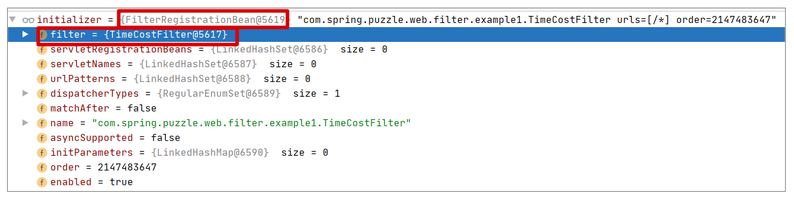
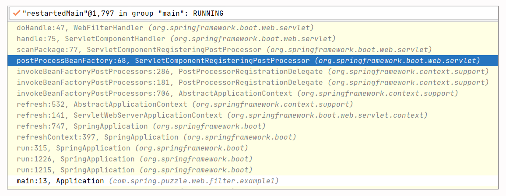
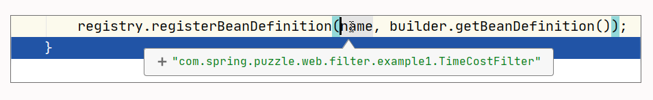
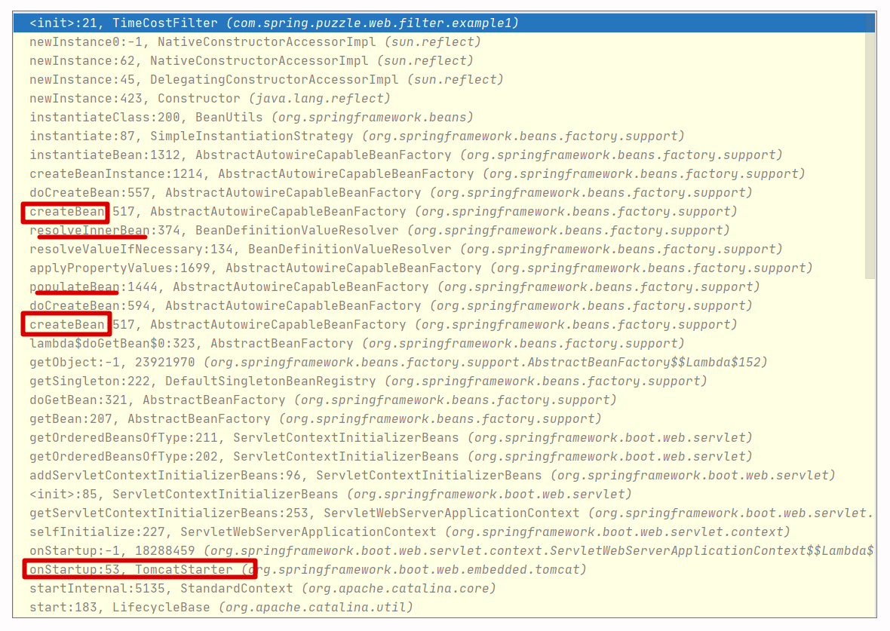
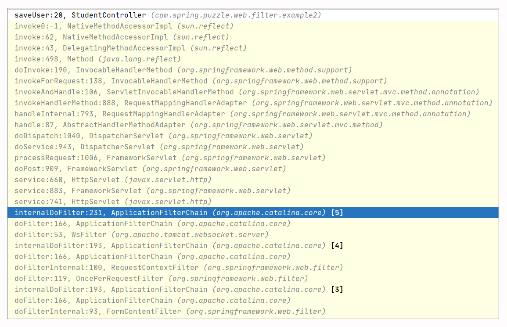
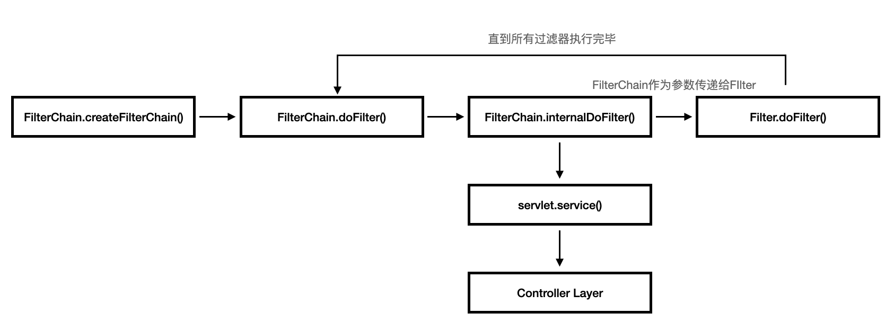

- 00 导读 5分钟轻松了解Spring基础知识.md.html
- 00 开篇词 贴心“保姆”Spring罢工了怎么办？.md.html
- 01 Spring Bean 定义常见错误.md.html
- 02 Spring Bean 依赖注入常见错误（上）.md.html
- 03 Spring Bean 依赖注入常见错误（下）.md.html
- 04 Spring Bean 生命周期常见错误.md.html
- 05 Spring AOP 常见错误（上）.md.html
- 06 Spring AOP 常见错误（下）.md.html
- 07 Spring事件常见错误.md.html
- 08 答疑现场：Spring Core 篇思考题合集.md.html
- 09 Spring Web URL 解析常见错误.md.html
- 10 Spring Web Header 解析常见错误.md.html
- 11 Spring Web Body 转化常见错误.md.html
- 12 Spring Web 参数验证常见错误.md.html
- 13 Spring Web 过滤器使用常见错误（上）.md.html
- 14 Spring Web 过滤器使用常见错误（下）.md.html
- 15 Spring Security 常见错误.md.html
- 16 Spring Exception 常见错误.md.html
- 17 答疑现场：Spring Web 篇思考题合集.md.html
- 18 Spring Data 常见错误.md.html
- 19 Spring 事务常见错误（上）.md.html
- 20 Spring 事务常见错误（下）.md.html
- 21 Spring Rest Template 常见错误.md.html
- 22 Spring Test 常见错误.md.html
- 23 答疑现场：Spring 补充篇思考题合集.md.html
- 导读 5分钟轻松了解一个HTTP请求的处理过程.md.html
- 知识回顾 系统梳理Spring编程错误根源.md.html
- 结束语 问题总比解决办法多.md.html
- 捐赠
13 Spring Web 过滤器使用常见错误（上）
你好，我是傅健。
我们都知道，过滤器是 Servlet 的重要标准之一，其在请求和响应的统一处理、访问日志记录、请求权限审核等方面都有着不可替代的作用。在 Spring 编程中，我们主要就是配合使用 @ServletComponentScan 和 @WebFilter 这两个注解来构建过滤器。
说起来比较简单，好像只是标记下这两个注解就一劳永逸了。但是我们还是会遇到各式各样的问题，例如工作不起来、顺序不对、执行多次等等都是常见的问题。这些问题的出现大多都是使用简单致使我们掉以轻心，只要你加强意识，大概率就可以规避了。
那么接下来我们就来学习两个典型的案例，并通过分析，带你进一步理解过滤器执行的流程和原理。
案例 1：@WebFilter 过滤器无法被自动注入
假设我们要基于 Spring Boot 去开发一个学籍管理系统。为了统计接口耗时，可以实现一个过滤器如下：
@WebFilter
@Slf4j
public class TimeCostFilter implements Filter {
public TimeCostFilter(){
System.out.println("construct");
}
@Override
public void doFilter(ServletRequest request, ServletResponse response, FilterChain chain) throws IOException, ServletException {
log.info("开始计算接口耗时");
long start = System.currentTimeMillis();
chain.doFilter(request, response);
long end = System.currentTimeMillis();
long time = end - start;
System.out.println("执行时间(ms)：" + time);
}
}
这个过滤器标记了@WebFilter。所以在启动程序中，我们需要加上扫描注解（即@ServletComponentScan）让其生效，启动程序如下：
@SpringBootApplication
@ServletComponentScan
@Slf4j
public class Application {
public static void main(String[] args) {
SpringApplication.run(Application.class, args);
log.info("启动成功");
}
}
然后，我们提供了一个 StudentController 接口来供学生注册：
@Controller
@Slf4j
public class StudentController {
@PostMapping("/regStudent/{name}")
@ResponseBody
public String saveUser(String name) throws Exception {
System.out.println("用户注册成功");
return "success";
}
}
上述程序完成后，你会发现一切按预期执行。但是假设有一天，我们可能需要把 TimeCostFilter 记录的统计数据输出到专业的度量系统（ElasticeSearch/InfluxDB 等）里面去，我们可能会添加这样一个 Service 类：
@Service
public class MetricsService {
@Autowired
public TimeCostFilter timeCostFilter;
//省略其他非关键代码
}
完成后你会发现，Spring Boot 都无法启动了：
***************************- APPLICATION FAILED TO START-
***************************-
Description:-
Field timeCostFilter in com.spring.puzzle.web.filter.example1.MetricsService required a bean of type ‘com.spring.puzzle.web.filter.example1.TimeCostFilter’ that could not be found.
为什么会出现这样的问题？既然 TimeCostFilter 生效了，看起来也像一个普通的 Bean，为什么不能被自动注入？
案例解析
这次我们换个方式，我先告诉你结论，你可以暂停几分钟想想关键点。
本质上，过滤器被 @WebFilter 修饰后，TimeCostFilter 只会被包装为 FilterRegistrationBean，而 TimeCostFilter 自身，只会作为一个 InnerBean 被实例化，这意味着 TimeCostFilter 实例并不会作为 Bean 注册到 Spring 容器。

所以当我们想自动注入 TimeCostFilter 时，就会失败了。知道这个结论后，我们可以带着两个问题去理清一些关键的逻辑：
- FilterRegistrationBean 是什么？它是如何被定义的？
- TimeCostFilter 是怎么实例化，并和 FilterRegistrationBean 关联起来的？
我们先来看第一个问题：FilterRegistrationBean 是什么？它是如何定义的？
实际上，WebFilter 的全名是 javax.servlet.annotation.WebFilter，很明显，它并不属于 Spring，而是 Servlet 的规范。当 Spring Boot 项目中使用它时，Spring Boot 使用了 org.springframework.boot.web.servlet.FilterRegistrationBean 来包装 @WebFilter 标记的实例。从实现上来说，即 FilterRegistrationBean#Filter 属性就是 @WebFilter 标记的实例。这点我们可以从之前给出的截图中看出端倪。
另外，当我们定义一个 Filter 类时，我们可能想的是，我们会自动生成它的实例，然后以 Filter 的名称作为 Bean 的名字来指向它。但是调试下你会发现，在 Spring Boot 中，Bean 名字确实是对的，只是 Bean 实例其实是 FilterRegistrationBean。
那么这个 FilterRegistrationBean 最早是如何获取的呢？这还得追溯到 @WebFilter 这个注解是如何被处理的。在具体解析之前，我们先看下 @WebFilter 是如何工作起来的。使用 @WebFilter 时，Filter 被加载有两个条件：
- 声明了 @WebFilter；
- 在能被 @ServletComponentScan 扫到的路径之下。
这里我们直接检索对 @WebFilter 的使用，可以发现 WebFilterHandler 类使用了它，直接在 doHandle() 中加入断点，开始调试，执行调用栈如下：

从堆栈上，我们可以看出对@WebFilter 的处理是在 Spring Boot 启动时，而处理的触发点是 ServletComponentRegisteringPostProcessor 这个类。它继承了 BeanFactoryPostProcessor 接口，实现对 @WebFilter、@WebListener、@WebServlet 的扫描和处理，其中对于@WebFilter 的处理使用的就是上文中提到的 WebFilterHandler。这个逻辑可以参考下面的关键代码：
class ServletComponentRegisteringPostProcessor implements BeanFactoryPostProcessor, ApplicationContextAware {
private static final List<ServletComponentHandler> HANDLERS;
static {
List<ServletComponentHandler> servletComponentHandlers = new ArrayList<>();
servletComponentHandlers.add(new WebServletHandler());
servletComponentHandlers.add(new WebFilterHandler());
servletComponentHandlers.add(new WebListenerHandler());
HANDLERS = Collections.unmodifiableList(servletComponentHandlers);
}
// 省略非关键代码
@Override
public void postProcessBeanFactory(ConfigurableListableBeanFactory beanFactory) throws BeansException {
if (isRunningInEmbeddedWebServer()) {
ClassPathScanningCandidateComponentProvider componentProvider = createComponentProvider();
for (String packageToScan : this.packagesToScan) {
scanPackage(componentProvider, packageToScan);
}
}
}
private void scanPackage(ClassPathScanningCandidateComponentProvider componentProvider, String packageToScan) {
// 扫描注解
for (BeanDefinition candidate : componentProvider.findCandidateComponents(packageToScan)) {
if (candidate instanceof AnnotatedBeanDefinition) {
// 使用 WebFilterHandler 等进行处理
for (ServletComponentHandler handler : HANDLERS) {
handler.handle(((AnnotatedBeanDefinition) candidate),
(BeanDefinitionRegistry) this.applicationContext);
}
}
}
}
最终，WebServletHandler 通过父类 ServletComponentHandler 的模版方法模式，处理了所有被 @WebFilter 注解的类，关键代码如下：
public void doHandle(Map<String, Object> attributes, AnnotatedBeanDefinition beanDefinition,
BeanDefinitionRegistry registry) {
BeanDefinitionBuilder builder = BeanDefinitionBuilder.rootBeanDefinition(FilterRegistrationBean.class);
builder.addPropertyValue("asyncSupported", attributes.get("asyncSupported"));
builder.addPropertyValue("dispatcherTypes", extractDispatcherTypes(attributes));
builder.addPropertyValue("filter", beanDefinition);
//省略其他非关键代码
builder.addPropertyValue("urlPatterns", extractUrlPatterns(attributes));
registry.registerBeanDefinition(name, builder.getBeanDefinition());
}
从这里，我们第一次看到了 FilterRegistrationBean。通过调试上述代码的最后一行，可以看到，最终我们注册的 FilterRegistrationBean，其名字就是我们定义的 WebFilter 的名字：

后续这个 Bean 的具体创建过程，这里不再赘述，感兴趣的话你可以继续深入研究。
现在，我们接着看第二个问题：TimeCostFilter 何时被实例化？
此时，我们想要的 Bean 被“张冠李戴”成 FilterRegistrationBean，但是 TimeCostFilter 是何时实例化的呢？为什么它没有成为一个普通的 Bean?
关于这点，我们可以在 TimeCostFilter 的构造器中加个断点，然后使用调试的方式快速定位到它的初始化时机，这里我直接给出了调试截图：

在上述的关键调用栈中，结合源码，你可以找出一些关键信息：
- Tomcat 等容器启动时，才会创建 FilterRegistrationBean；
- FilterRegistrationBean 在被创建时（createBean）会创建 TimeCostFilter 来装配自身，TimeCostFilter 是通过 ResolveInnerBean 来创建的；
- TimeCostFilter 实例最终是一种 InnerBean，我们可以通过下面的调试视图看到它的一些关键信息：

通过上述分析，你可以看出最终 TimeCostFilter 实例是一种 InnerBean，所以自动注入不到也就非常合理了。
问题修正
找到了问题的根源，解决就变得简单了。
从上述的解析中，我们可以了解到，当使用 @WebFilter 修饰过滤器时，TimeCostFilter 类型的 Bean 并没有注册到 Spring 容器中，真正注册的是 FilterRegistrationBean。这里考虑到可能存在多个 Filter，所以我们可以这样修改下案例代码：
@Controller
@Slf4j
public class StudentController {
@Autowired
@Qualifier("com.spring.puzzle.filter.TimeCostFilter")
FilterRegistrationBean timeCostFilter;
}
这里的关键点在于：
- 注入的类型是 FilterRegistrationBean 类型，而不是 TimeCostFilter 类型；
- 注入的名称是包含包名的长名称，即 com.spring.puzzle.filter.TimeCostFilter（不能用 TimeCostFilter），以便于存在多个过滤器时进行精确匹配。
经过上述修改后，代码成功运行无任何报错，符合我们的预期。
案例 2：Filter 中不小心多次执行 doFilter()
在之前的案例中，我们主要都讨论了使用@ServletComponentScan + @WebFilter 构建过滤器过程中的一些常见问题。
而在实际生产过程中，如果我们需要构建的过滤器是针对全局路径有效，且没有任何特殊需求（主要是指对 Servlet 3.0 的一些异步特性支持），那么你完全可以直接使用 Filter 接口（或者继承 Spring 对 Filter 接口的包装类 OncePerRequestFilter），并使用@Component 将其包装为 Spring 中的普通 Bean，也是可以达到预期的需求。
不过不管你使用哪一种方式，你都可能会遇到一个共同的问题：业务代码重复执行多次。
考虑到上一个案例用的是@ServletComponentScan + @WebFilter，这里我们不妨再以@Component + Filter 接口的实现方式来呈现下我们的案例，也好让你对 Filter 的使用能了解到更多。
首先，还是需要通过 Spring Boot 创建一个 Web 项目，不过已经不需要 @ServletComponentScan：
@SpringBootApplication()
public class LearningApplication {
public static void main(String[] args) {
SpringApplication.run(LearningApplication.class, args);
System.out.println("启动成功");
}
}
StudentController 保持功能不变，所以你可以直接参考之前的代码。另外我们定义一个 DemoFilter 用来模拟问题，这个 Filter 标记了 @Component 且实现了 Filter 接口，已经不同于我们上一个案例的方式：
@Component
public class DemoFilter implements Filter {
public void doFilter(ServletRequest request, ServletResponse response, FilterChain chain) throws IOException, ServletException {
try {
//模拟异常
System.out.println("Filter 处理中时发生异常");
throw new RuntimeException();
} catch (Exception e) {
chain.doFilter(request, response);
}
chain.doFilter(request, response);
}
}
全部代码实现完毕，执行后结果如下：
Filter 处理中时发生异常
......用户注册成功
......用户注册成功
这里我们可以看出，业务代码被执行了两次，这并不符合我们的预期。
我们本来的设计目标是希望 Filter 的业务执行不会影响到核心业务的执行，所以当抛出异常时，我们还是会调用chain.doFilter。不过往往有时候，我们会忘记及时返回而误入其他的chain.doFilter，最终导致我们的 Filter 执行多次。
而检查代码时，我们往往不能立马看出问题。所以说，这是一个典型的错误，虽然原因很简单吧。不过借着这个案例，我们可以分析下为什么会执行两次，以深入了解 Filter 的执行。
案例解析
在解析之前，我先给你讲下 Filter 背后的机制，即责任链模式。
以 Tomcat 为例，我们先来看下它的 Filter 实现中最重要的类 ApplicationFilterChain。它采用的是责任（职责）链设计模式，在形式上很像一种递归调用。
但区别在于递归调用是同一个对象把子任务交给同一个方法本身去完成，而职责链则是一个对象把子任务交给其他对象的同名方法去完成。其核心在于上下文 FilterChain 在不同对象 Filter 间的传递与状态的改变，通过这种链式串联，我们就可以对同一种对象资源实现不同业务场景的处理，达到业务解耦。整个 FilterChain 的结构就像这张图一样：

这里我们不妨还是带着两个问题去理解 FilterChain：
- FilterChain 在何处被创建，又是在何处进行初始化调用，从而激活责任链开始链式调用？
- FilterChain 为什么能够被链式调用，其内在的调用细节是什么？
接下来我们直接查看负责请求处理的 StandardWrapperValve#invoke()，快速解决第一个问题：
public final void invoke(Request request, Response response)
throws IOException, ServletException {
// 省略非关键代码
// 创建filterChain
ApplicationFilterChain filterChain =
ApplicationFilterFactory.createFilterChain(request, wrapper, servlet);
// 省略非关键代码
try {
if ((servlet != null) && (filterChain != null)) {
// Swallow output if needed
if (context.getSwallowOutput()) {
// 省略非关键代码
//执行filterChain
filterChain.doFilter(request.getRequest(),
response.getResponse());
// 省略非关键代码
}
// 省略非关键代码
}
通过代码可以看出，Spring 通过 ApplicationFilterFactory.createFilterChain() 创建FilterChain，然后调用其 doFilter() 执行责任链。而这些步骤的起始点正是StandardWrapperValve#invoke()。
接下来，我们来一起研究第二个问题，即 FilterChain 能够被链式调用的原因和内部细节。
首先查看 ApplicationFilterFactory.createFilterChain()，来看下FilterChain如何被创建，如下所示：
public static ApplicationFilterChain createFilterChain(ServletRequest request,
Wrapper wrapper, Servlet servlet) {
// 省略非关键代码
ApplicationFilterChain filterChain = null;
if (request instanceof Request) {
// 省略非关键代码
// 创建Chain
filterChain = new ApplicationFilterChain();
// 省略非关键代码
}
// 省略非关键代码
// Add the relevant path-mapped filters to this filter chain
for (int i = 0; i < filterMaps.length; i++) {
// 省略非关键代码
ApplicationFilterConfig filterConfig = (ApplicationFilterConfig)
context.findFilterConfig(filterMaps[i].getFilterName());
if (filterConfig == null) {
continue;
}
// 增加filterConfig到Chain
filterChain.addFilter(filterConfig);
}
// 省略非关键代码
return filterChain;
}
它创建 FilterChain，并将所有 Filter 逐一添加到 FilterChain 中。然后我们继续查看 ApplicationFilterChain 类及其 addFilter()：
// 省略非关键代码
private ApplicationFilterConfig[] filters = new ApplicationFilterConfig[0];
private int pos = 0;
private int n = 0；
// 省略非关键代码
void addFilter(ApplicationFilterConfig filterConfig) {
for(ApplicationFilterConfig filter:filters)
if(filter==filterConfig)
return;
if (n == filters.length) {
ApplicationFilterConfig[] newFilters =
new ApplicationFilterConfig[n + INCREMENT];
System.arraycopy(filters, 0, newFilters, 0, n);
filters = newFilters;
}
filters[n++] = filterConfig;
}
在 ApplicationFilterChain 里，声明了3个变量，类型为 ApplicationFilterConfig 的数组 Filters、过滤器总数计数器 n，以及标识运行过程中被执行过的过滤器个数 pos。
每个被初始化的 Filter 都会通过 filterChain.addFilter()，加入到类型为 ApplicationFilterConfig 的类成员数组 Filters 中，并同时更新 Filter 总数计数器 n，使其等于 Filters 数组的长度。到这，Spring 就完成了 FilterChain 的创建准备工作。
接下来，我们继续看 FilterChain 的执行细节，即 ApplicationFilterChain 的 doFilter()：
public void doFilter(ServletRequest request, ServletResponse response)
throws IOException, ServletException {
if( Globals.IS_SECURITY_ENABLED ) {
//省略非关键代码
internalDoFilter(request,response);
//省略非关键代码
} else {
internalDoFilter(request,response);
}
}
这里逻辑被委派到了当前类的私有方法 internalDoFilter，具体实现如下：
private void internalDoFilter(ServletRequest request,
ServletResponse response){
if (pos < n) {
// pos会递增
ApplicationFilterConfig filterConfig = filters[pos++];
try {
Filter filter = filterConfig.getFilter();
// 省略非关键代码
// 执行filter
filter.doFilter(request, response, this);
// 省略非关键代码
}
// 省略非关键代码
return;
}
// 执行真正实际业务
servlet.service(request, response);
}
// 省略非关键代码
}
我们可以归纳下核心知识点：
- ApplicationFilterChain的internalDoFilter() 是过滤器逻辑的核心；
- ApplicationFilterChain的成员变量 Filters 维护了所有用户定义的过滤器；
- ApplicationFilterChain的类成员变量 n 为过滤器总数，变量 pos 是运行过程中已经执行的过滤器个数；
- internalDoFilter() 每被调用一次，pos 变量值自增 1，即从类成员变量 Filters 中取下一个 Filter；
- filter.doFilter(request, response, this) 会调用过滤器实现的 doFilter()，注意第三个参数值为 this，即为当前ApplicationFilterChain 实例 ，这意味着：用户需要在过滤器中显式调用一次javax.servlet.FilterChain#doFilter，才能完成整个链路；
- pos < n 意味着执行完所有的过滤器，才能通过servlet.service(request, response) 去执行真正的业务。
执行完所有的过滤器后，代码调用了 servlet.service(request, response) 方法。从下面这张调用栈的截图中，可以看到，经历了一个很长的看似循环的调用栈，我们终于从 internalDoFilter() 执行到了Controller层的saveUser()。这个过程就不再一一细讲了。

分析了这么多，最后我们再来思考一下这个问题案例。
DemoFilter 代码中的 doFilter() 在捕获异常的部分执行了一次，随后在 try 外面又执行了一次，因而当抛出异常的时候，doFilter() 明显会被执行两次，相对应的 servlet.service(request, response) 方法以及对应的 Controller 处理方法也被执行了两次。
你不妨回过头再次查看上文中的过滤器执行流程图，相信你会有更多的收获。
问题修正
现在就剩下解决这个问题了。其实只需要删掉重复的 filterChain.doFilter(request, response) 就可以了，于是代码就变成了这样：
@Component
public class DemoFilter implements Filter {
public void doFilter(ServletRequest request, ServletResponse response, FilterChain chain) throws IOException, ServletException {
try {
//模拟异常
System.out.println("Filter 处理中时发生异常");
throw new RuntimeException();
} catch (Exception e) {
//去掉下面这行调用
//chain.doFilter(request, response);
}
chain.doFilter(request, response);
}
}
重新运行程序和测试，结果符合预期，业务只执行了一次。回顾这个问题，我想你应该有所警示：在使用过滤器的时候，一定要注意，不管怎么调用，不能多次调用 FilterChain#doFilter()。
重点回顾
通过这节课的学习，相信你对过滤器已经有了一个较为深入的了解，这里我们不妨再次梳理下关键知识点：
- @WebFilter 这种方式构建的 Filter 是无法直接根据过滤器定义类型来自动注入的，因为这种Filter本身是以内部Bean来呈现的，它最终是通过FilterRegistrationBean来呈现给Spring的。所以我们可以通过自动注入FilterRegistrationBean类型来完成装配工作，示例如下：
@Autowired
@Qualifier("com.spring.puzzle.filter.TimeCostFilter")
FilterRegistrationBean timeCostFilter;
- 我们在过滤器的执行中，一定要注意避免不要多次调用doFilter()，否则可能会出现业务代码执行多次的问题。这个问题出现的根源往往在于“不小心”，但是要理解这个问题呈现的现象，就必须对过滤器的流程有所了解。可以看过滤器执行的核心流程图：

结合这个流程图，我们还可以进一步细化出以下关键步骤：
- 当一个请求来临时，会执行到 StandardWrapperValve的invoke()，这个方法会创建 ApplicationFilterChain，并通过ApplicationFilterChain#doFilter() 触发过滤器执行；
- ApplicationFilterChain 的 doFilter() 会执行其私有方法 internalDoFilter；
- 在 internalDoFilter 方法中获取下一个Filter，并使用 request、response、this（当前ApplicationFilterChain 实例）作为参数来调用 doFilter()：
public void doFilter(ServletRequest request, ServletResponse response,- FilterChain chain) throws IOException, ServletException;
- 在 Filter 类的 doFilter() 中，执行Filter定义的动作并继续传递，获取第三个参数 ApplicationFilterChain，并执行其 doFilter()；
- 此时会循环执行进入第 2 步、第 3 步、第 4 步，直到第3步中所有的 Filter 类都被执行完毕为止；
- 所有的Filter过滤器都被执行完毕后，会执行 servlet.service(request, response) 方法，最终调用对应的 Controller 层方法 。
以上即为过滤器执行的关键流程，希望你能牢牢记住。
思考题
在案例2中，我们提到一定要避免在过滤器中调用多次FilterChain#doFilter()。那么假设一个过滤器因为疏忽，在某种情况下，这个方法一次也没有调用，会出现什么情况呢？
这样的过滤器可参考改造后的DemoFilter：
@Component
public class DemoFilter implements Filter {
public void doFilter(ServletRequest request, ServletResponse response, FilterChain chain) throws IOException, ServletException {
System.out.println("do some logic");
}
}
期待你的思考，我们留言区见！
© 2019 - 2023 Liangliang Lee. Powered by gin and hexo-theme-book.